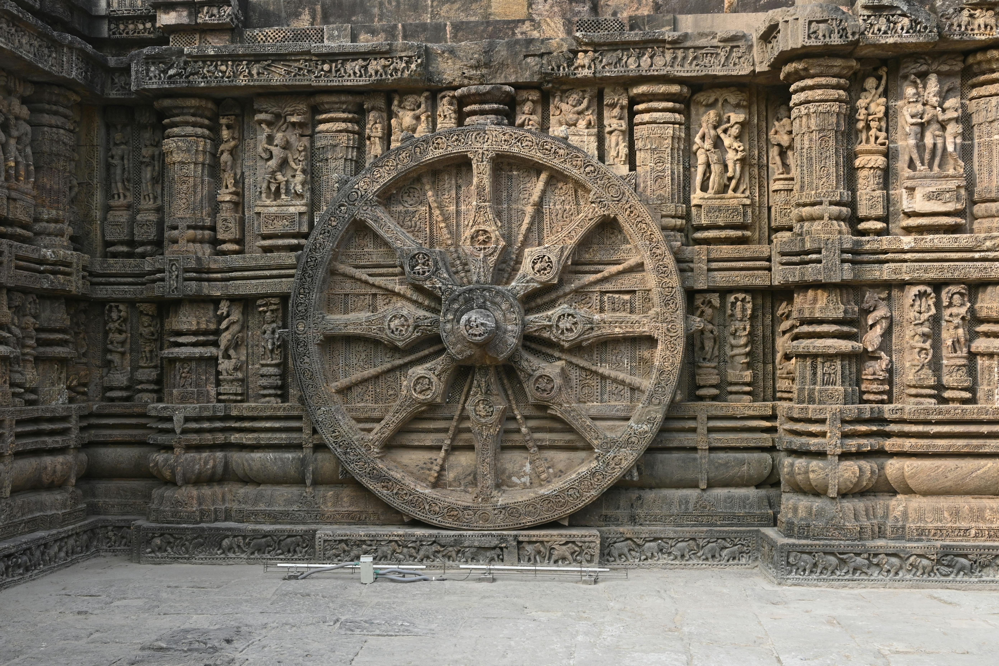

BackPackers

From Konark’s Sun Temple to the Jagannath Temple in Puri, Odisha is a treasure trove of architectural wonders
Rich heritage, diverse cultures and awe-inspiring historical monuments define this vibrant state in India. Travellers often claim that Odisha tourism hasn’t received its due and is often overshadowed in lieu of other states. But if you are looking for history, architecture, nature and wildlife, there can’t be a more apt s Odisha tourism has a large number of historical and religious monuments including the magnificent Jagannath Temple.The monsoon season usually brings the state to a standstill but the spirit of the people remains unshaken.
Top 10 attractions in Odisha
Puri-Rath Yatra and the Beaches
Puri in Odisha is one of the four must-visit pilgrimage sites for Hindus because of Jagannath Temple that forms the part of Char Dham in India.Known for its spiritual significance, also boasts a stunning shoreline that captivates locals and tourists alike. The city’s beaches, each with its unique allure, are central to the numerous activities Puri offers, making it an ideal destination for beach enthusiasts

Konark-The city of the Sun Temple
Konark's Sun Temple is an architectural marvel and is one of the most beautiful monuments of India. The Annual Dance Festival is a five day-long cultural extravaganza which invites unique dancing talent from all over the country. This festival is a grand celebration of our country's rich cultural and artistic legacy, an event to truly rejoice the various dance forms that our country has invented
Udayagiri-Caves in the Heart of India
'Udayagiri' means the mountain of the sunrise, and is a historical Hindu ritual site home to twenty rock-cut caves near Vidisha, Madhya Pradesh. Otherwise known as 'Vishnu Padagiri' meaning "the feet of Vishnu", the Udayagiri Caves are extensively carved with iconographies of Hindu Gods, namely Vishnu, Durga and Shiva containing legendary stories of the gods and their shrines.

Hirakud Dam
Any nature lover will enjoy the quaint atmosphere and lush greenery that is in abundance at the Hirakud Dam. The dam stretches between the Burla and Hirakud Hills. In addition to showcasing stunning natural beauty, the dam irrigates 7,500,000 hectares of land and also generates hydroelectricity. Situated near the Hirakud Dam is a hill called Budharaja hill, which is well-known for the Budharaja Temple at its peak
Bhitarkanika National Park
Bhitarkanika is known for its mangrove forests, which are home to a variety of species of reptiles, birds, and mammals. It is also known for its rich biodiversity and many endangered species like the saltwater crocodile, olive ridley turtle, and the white-bellied sea eagle.
Satkosia Tiger Reserve
The picturesque town of Satkosia, 160 km from Bhubaneswar, boasts of a wildlife sanctuary popularly known as the Satkosia Tiger Reserve since 1976. The sanctuary is home to tigers in the moist, deciduous forests of the Eastern Ghats. It is also home to elephants, birds and other animals that can be spotted in the wild.
Talasari Beach
beaches which are beyond the reach of contamination, beaches that refresh our senses and Talasari is one such place. This virgin beach has sand dunes, calmer waves amid several palm trees, coconut trees, cashew trees known to be the last beach on the north eastern coast of India.
Baripada-The Second Puri
Baripada is a city, recognised by its beautiful culture and an essence of purity in nature. Its Rath Yatra is considered the biggest and oldest after Puri and thus Baripada is also known as Dwitiya Srikhetra.It is host to the world famous Car Festival (Rathyatra) which allows only women to pull the Rath of Maa Subhadra and gathers huge crowds
Rourkela-Steel City of Odisha
Surrounded by hills and rivers, the city of Rourkela is located in the state of Odisha. Popularly called as the 'Steel City of Odisha' and Ispat Nagar, it is one of the first cities of the country to become commercialized for steel production. Rourkela’s natural positioning in the lap of nature makes it an offbeat tourist location for the people of nearby areas.
Jeypore-City of Fresh-Water lakes
Jeypore,is a large city in the state of Odisha and is famous for its fresh water lakes, waterfalls and valleys. Jeypore is home to about 62 affiliated communities such as Gond, Dhruba, Paraja, Koya.Visiting Jayepore is a welcome break for tourists who want to take a break from the city life
Kerala Tour Packages
4 Days 3 Nights Odisha Tour
INR 23000 (-10%off)
21,000/-
Delightful Odisha Sightseeing Tour Package
INR 22000 (-10%off)
19800/-
Luxury Odisha Family Tour
INR 40000 (-30%off)
28000/-